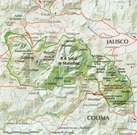

Referencias
- Carvajal, S. 2004. Luz María Villarreal de Puga apuntes para una biografía: edición conmemorativa con motivo de la entrega del Doctorado Honoris Causa. Universidad de Guadalajara, Instituto de Biología UNAM. 137 p.
- Sociedad Botánica Mexicana
- Taylor P., J.J. 2004. La maestra Luz María Villarral de Puga. Scientia CUCBA 6(1-2):1-2
Luz María Villarreal de Puga
1913 - 2013
Luz María Villarreal fue una destacada botánica que nació en 1913 en la ciudad de México. Estudió en el Colegio de las Vizcaínas, en el cual se graduó como profesora normalista.
Su vida profesional comenzó como secretaria para el gobierno, pero en 1959 se mudó a la ciudad de Guadalajara donde cursó una especialización en Biología en la Escuela Normal Superior “Nueva Galicia” de Guadalajara y más tarde, ahí comenzó a impartir clases de biología, zoología y botánica.
También impartió las cátedras de sistemática botánica, botánica general y ciencias biológicas en escuelas preparatorias de la Universidad de Guadalajara, en la Escuela de Agricultura de la misma universidad y en la Normal Superior del Estado. En 1960 se integró al Instituto de Botánica de la Universidad de Guadalajara y en 1980 fue nombrada su directora. Durante su gestión, impulsó los estudios florísticos y de vegetación, consolidando a la institución en este campo de investigación.
Otra de sus actividades fue la de promover la conservación de la naturaleza del estado de Jalisco. Descubrió el maíz perenne Zea diploperennis y gracias a sus gestiones para su protección, promovió la formación de la Reserva de la Biosfera de la Sierra en Manantlán en 1987.
En sus excursiones al campo hizo numerosas colectas de la flora tanto del estado de Jalisco como de otros estados, con las cuales incrementó el acervo del herbario del Instituto de Botánica, que a la fecha alberga la colección de plantas más importante del occidente de México.
Fue miembro de varias sociedades científicas dedicadas al desarrollo y difusión de las ciencias biológicas, así como por la conservación de la naturaleza, como la Sociedad Botánica de México, Sociedad Botánica del Estado de Jalisco y la International Asociación Internacional de Taxonomía de Plantas.
Aportación
- Teocintle “Zea diploperennis”. Reserva de la Biósfera Sierra de Manantlán (Historia) CONANP
